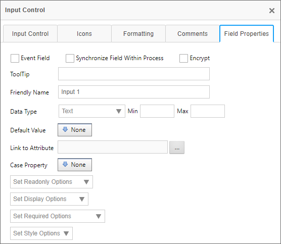

This tab displays a list of all the controls (i.e. form fields) on the Form definition. When you add a control the the Form Template, the corresponding Form data field will automatically be created, and the control will appear in the list of controls on the Form Controls tab after the Form Template is checked in.
Properties can be configured for these form controls (fields) by clicking on the Edit link, which will open the Form Field Properties dialog box for the field.
For Process Director v5.44.1000, the Form field properties can also be configured in the persistent Properties pane that appears on the Edit tab, when the Online Form Designer is displayed. The properties can thus be configured on both the Edit tab, as well as the Form Controls tab of the Form definition. In the Online Form Designer, the Form field properties will appear on the Field Properties tab of the designer's persistent Properties pane, as shown below. This feature enables you to set the properties without having to navigate to the Form Controls tab, simplifying the process of fully configuring a control's properties. This feature does not necessarily replace the properties accessible from the Form Controls tab, but does give you an additional method for accessing the same properties.

For all versions of Process Director prior to v5.44.1000, Form field properties must be configured on the Form Controls tab of the Form definition.
On the Form Controls tab, the Form Field Properties dialog box for each form control can be opened by clicking the Edit link for each control. The dialog box enables you to configure the properties of each form field. You can configure the form field’s tooltip, its friendly name, the minimum and maximum values it can hold, as well as under what conditions the form field will be enabled, viewable, or required. You can also configure the form field’s default value, data type, and attribute to which it links. Different form field types may have some subset of the properties below, as not all field types have the full set of properties. In general, however, the full set of form field properties are listed below.

The form field properties include:
If checked off, this form field will trigger an event when interacted with. Events can be used to update the form by triggering custom tasks or custom form scripts.
If checked, this field will synchronize values will all other form fields that have the same names but are on different forms with different definitions in the same Process. When the value of a synced form field is updated, the value will be synchronized with all other form fields with the same names in the Process, whether or not those form fields are also marked as synchronized. However, if a form field’s value is updated and that form field is not marked as a synchronized field, it will not update the values of other fields with the same names in the process, even if those fields are marked as synchronized.
If a column in an array is marked as synchronized, the number of rows and the content of that column will be synced with all other arrays in the process containing a column of the same name. This means that adding and removing rows in an array with a synced column will also add and remove rows in other arrays in the process with columns of the same name. Because synchronized array fields are so powerful, caution is recommended when using synchronized fields with arrays. Instead, we recommend alternatives, like the Copy Form Data custom task.
Prior to Process Director v4.04, field synchronization would only occur on form submission, but not when the Form was saved via a Save button, and not submitted. From v4.04, synchronization will occur any time the Form is saved, even if the Form is not submitted.
When moused over, the form field will display the text entered into this text box as a tooltip.
Because Form Field Names have some unavoidable constraints in how they are named, the field names may not be particularly friendly for users. The Friendly Name property enables you to configure a different name that will be displayed to end users in places like Knowledge Views, without worrying about the constraints that you have to adhere to when you place a field on the form template. For users of Process Director v5.12 or higher, using a Camel Case value (e.g., MyField) for the field's Name will automatically create a Friendly Name based on the Camel Case Name (e.g., My Field).
This enables you to fill a Dropdown field with the content from a dropdown object. You can link multiple dropdowns to dropdown objects, which allows you to reuse dropdown objects in multiple forms.

Setting the data type will enforce that the form field accepts data formatted as the appropriate type. The Data Type can be any of the following:
Occasionally, it may be necessary to change the data type of a Form Field. For instance, one common mistake implementers make is setting the data type of a field like a Zip Code to "Number", because the field contains only digits. The natural assumption implementers make is that, since the field contains only digits, it must be a number field. This is generally incorrect, since the best practice is that if you are not going to do math on a field value it is not a number. Moreover, treating fields like Zip Codes as numbers will cause them to sort differently (in numerical order) than they would sort if they were text (alphabetical order).
Often, problems don't become apparent until a number of processes have already been started, so you not only wish to change the data type for future instances of the Form, you also want to change the data type for past instances as well. Happily, Process Director enables you to make the change retroactive by following the procedure below:


 An additional debugging option exists to convert existing form data from a text field into a number or date field, as appropriate. This is available in the troubleshooting tab in the IT Admin while in "debug mode" and is called "Update All Form Data to match Controls". This will fix an issue that arises when trying to generate SQL Views that include text fields that stored integer or date data. Earlier version of Process Director stored this data as a string. This option will transfer the data from a string field in the database into the appropriate number or date fields. This does not affect the usual operation of Process Director, and is relevant only when trying to include these fields in a SQL View.
An additional debugging option exists to convert existing form data from a text field into a number or date field, as appropriate. This is available in the troubleshooting tab in the IT Admin while in "debug mode" and is called "Update All Form Data to match Controls". This will fix an issue that arises when trying to generate SQL Views that include text fields that stored integer or date data. Earlier version of Process Director stored this data as a string. This option will transfer the data from a string field in the database into the appropriate number or date fields. This does not affect the usual operation of Process Director, and is relevant only when trying to include these fields in a SQL View.
For v5.32 and higher, an additional debugging option, which will appear next to form fields that are setting meta data attributes, will cause the system to update the category and attribute data on all old form instances using the form data on the instance.
Certain data types enable you to set a minimum or maximum value for the data the field will accept. This behavior will be different for text or numeric fields.

You can specify the default value of a form field. The Default Value dropdown allows you to select from a list of common default values, like Workflow Instance Names or the results of Business Rules. You can also specify the default be set to a custom value or result from a System Variable Tag.
You can use this picker control to set a Meta Data Attribute from the Form Field.
For Case Management applications, setting the property will save the field as a Case Property, rather than a Form field. Case Management Forms often contain a mix of Form Fields and Case Property fields. Case property fields do not need to be replicated between forms. The Case Property is part of the shared data context that links all Forms to the Case instance. Once a case property is set, that property is available for any other Form in the case to get or set the property.
Some controls, such as radio buttons and dropdowns, can have both a value and a display string. Process Director will save both values in the case of those controls, and, by default, the case property returned will be the value of the control. The display string, however, can be returned via a Case system variable, using the syntax:
{CASE:PropertyName, format=string}
So, in any instance where you will want to evaluate the display string, rather than a value, such as in a condition for a Business Rule, you'll need to evaluate the System Variable as a string, using the syntax above. If you select the case property from the dropdown menu in the Choose System Variable dialog, the case property will return the value, and not the display string.
This option gives you the ability to Enable or Disable a form control including the sections and collapsible sections. You may also Enable or Disable based on a condition using the Condition Builder.

This option gives you the ability to Show or Hide a form control including the sections and collapsible sections. You may also Show or Hide based on a condition using the Condition Builder.

This option gives you the ability to set the form control as required or not required including the sections and collapsible sections.

You may also set the form control as required or not required based on a condition using the Condition Builder.

Validation and required fields work together in an important way, because Process Director will only validate a field if it contains a value. Process Director will not validate a blank field, even a field that you want specifically formatted using a Regular Expression. Setting a field as required tells Process Director that the field must contain a value, and will impose validation on a blank field. The fact that you specify a data type or regular expression for a field does not indicate to Process Director that the field must contain a value. So, if you want to ensure that Process Director validates a field, even if it's blank, then the field must be a required field.
You can view the documentation for each of the other configuration tabs by using the Table of Contents displayed on the upper right corner of the page, or use one of the links below.
Properties: General Form definition properties.
Edit: Opens the editor for the form's visual template, the Online Form Designer.
Custom Task Event Mapping: Enables you to map Custom Tasks to run on specified form events.
Validation Rules: Enables you to add custom validation to the form.
Set Form Data: Enables you to set the value of Form fields automatically, based on events or conditions you specify.
Fill Dropdowns: Enables you to automatically set the options available in a dropdown control.
Other Tabs: Documentation for the Form Data SQL View, History, Meta Data, Versions, and Permissions tabs.